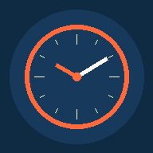

ترددیار
ورود / خروج پرسنل بر اساس موقعیت پروژه
—
ورود پرسنل
—
—
📍 یک پروژه انتخاب کن
در حال بررسی اتصال...
📍 در حال بررسی وضعیت امروز...
موقعیت مکانی هنوز بررسی نشده است.
ابتدا موقعیت مکانی را بررسی کن
‹‹
🔼 تردد های امروز
هنوز ثبتی وجود ندارد
درخواستها
همه تاریخها
🔲 همه
🕐 تردد
⏱ اضافهکار
🧳 ماموریت
🏖 مرخصی
📋 سایر
در حال بارگذاری...
+
سوابق من
ماه و سال موردنظر را انتخاب کرده و «بارگذاری سوابق» را بزنید.
عملکرد روزانه
ریزِ کارکرد، موظفی، مفید، اضافهکاری، مرخصی، شبکاری، جمعهکاری و تعطیلکاری برای هر روزِ ماه.
ماه و سال را انتخاب کرده و «بارگذاری» را بزنید.
شیفتهایِ من
در حالِ بارگذاری...
کارکرد
جمعِ ماهانهی کارکرد، موظفی، مفید، اضافهکاری، مرخصی، شبکاری، جمعهکاری و تعطیلکاری.
ماه و سال را انتخاب کرده و «بارگذاری» را بزنید.
درخواست جدید
اگر خالی بذاری، ساعت تایید مدیر ثبت میشود.
—
شیدسچپج
روز شروع بازه رو انتخاب کن
یک روز برای انتخاب تکی، یا دو روز برای بازه بزن.
ورود به بخش مدیریت
ترددیار
ترددیار
فقط تویِ این بازه، مدیریت و کارمند میتونن واردِ برنامه بشن. خالی بذاری، هیچ محدودیتی اعمال نمیشه.
این کار **همهی** اطلاعاتِ گوگلشیت (پرسنل، پروژهها، ترددها، شیفتها، درخواستها، همهچی) رو برایِ همیشه پاک میکنه — غیرقابلِ بازگشت. فقط برایِ راهاندازیِ یه نسخهی کاملاً تازه برایِ یه مشتریِ جدید استفاده کن. بعدِ ریست، یوزرنیم/پسوردِ مدیر بهطورِ پیشفرض به admin/admin برمیگرده.
⚙️ پنل مدیریت
داشبورد امروز
👥
—
کل پرسنل
🟢
—
حاضرِ الان
🔴
—
غایبین امروز
🏖
—
مرخصی/ماموریت امروز
🚪
—
خروجزدههای امروز
وضعیتِ حضورِ امروز
—کل پرسنل
تردد امروز (ورود و خروج بر ساعت)
در انتظار تایید
در حال بارگذاری...
آخرین ترددها
در حال بارگذاری...
حسابهای پرسنل
در حال بارگذاری...
این شیفت از تاریخِ انتخابشده به بعد برایِ این پرسنل فعال میشه — روزهایِ گذشته دستنخورده میمونن.
پروژهها و محدوده مجاز
در حال بارگذاری...
اگر تیک این گزینه برداشته شود، کارمند میتواند از هر جای این شهر ورود/خروج بزند (مناسب برای مأموریت یا پروژهای در شهر دیگر که مختصات دقیق ندارد) — مختصات و شعاع زیر نادیده گرفته میشود.
شیفت
شیفتِ ساده: اول یه الگویِ هفتگی میسازی، بعد خودکار رویِ کلِ سال پخش میشه و میتونی تکتکِ روزها رو دستی اصلاح کنی.
شیفتِ سفارشی: بدونِ الگویِ هفتگی، مستقیم میری تو تقویمِ خالی و هر روز رو جداگونه، دستی تعریف میکنی.
شیفتِ سفارشی: بدونِ الگویِ هفتگی، مستقیم میری تو تقویمِ خالی و هر روز رو جداگونه، دستی تعریف میکنی.
اگه تیک بخوره، جمعهها و تعطیلاتِ رسمی برایِ این شیفت اعمال میشن (اون روزها موظفی صفره). اگه تیک نخوره، این شیفت از هیچکدوم تبعیت نمیکنه — یعنی جمعه و روزِ تعطیل هم مثلِ یه روزِ عادیِ همین شیفت حساب میشن، و اگه پرسنل تردد ثبت نکنه، غیبت براش ثبت میشه.
زمانِ شناوری: بازهای که کارمند میتواند از شروعِ شیفت تاخیر داشته باشد و در انتهایِ شیفت با اضافهکاری در همان روز جبران نماید.
سقفِ اضافهکاریِ روزانه: برایِ سازمانهایی که میزانِ اضافهکاریِ مجاز مشخص است — اگر خالی بماند، محدودیتی اعمال نمیشود.
سقفِ اضافهکاریِ روزانه: برایِ سازمانهایی که میزانِ اضافهکاریِ مجاز مشخص است — اگر خالی بماند، محدودیتی اعمال نمیشود.
برایِ هرکدوم از این سه، اگه وارد کنی، اضافهکاری تا همون سقف حساب میشه و مازادش «مازادِ حضور» میشه؛ اگه خالی بذاری، بدونِ سقف حساب میشه.
تاخیرِ مجاز: اگه پرسنل کمتر یا مساویِ این مقدار از شروعِ شیفت دیر برسه، غیبت حساب نمیشه، جزوِ کارکرد میره.
تعجیلِ مجاز: اگه پرسنل کمتر یا مساویِ این مقدار قبل از پایانِ شیفت خروج بزنه، غیبت حساب نمیشه.
شناوریِ قبلِ شیفت: اگه پرسنل زودتر از شروعِ شیفت شروع به کار کنه، میتونه به همون میزان هم زودتر خروج بزنه بدونِ غیبت.
تعجیلِ مجاز: اگه پرسنل کمتر یا مساویِ این مقدار قبل از پایانِ شیفت خروج بزنه، غیبت حساب نمیشه.
شناوریِ قبلِ شیفت: اگه پرسنل زودتر از شروعِ شیفت شروع به کار کنه، میتونه به همون میزان هم زودتر خروج بزنه بدونِ غیبت.
پرسنل خارج از این بازه اصلاً مجاز به ثبتِ تردد نیست.
برنامهی هفتگی
این الگو فقط برایِ «ساختِ تقویم» استفاده میشه — یعنی هر شنبهیِ سال، ساعتِ همینجا رو میگیره، هر یکشنبهای همینطور، و... . بعد از ساختِ تقویم میتونی تکتکِ روزها رو تو تقویمِ ماهانه دستی عوض کنی. برای هر روز، اول تیکِ «روزِ کاری» را بزن تا ساعتِ شروع/پایان فعال شود.
هرچی تو این تقویم تعریف/ویرایش/حذف/کپی میکنی، فقط تو پیشنمایشه — تا «ثبتِ نهایی» رو نزنی، هیچی ذخیره نمیشه.
تقویمِ شیفت
هر روزی که «بدونِ شیفت»ه، دکمهی «+ تعریفِ شیفت» داره. برایِ کپیکردنِ ساعتِ یه روزِ تعریفشده: رویِ دکمهی Copy همون روز بزن، بعد رویِ دکمهی Paste که رویِ بقیهی روزها ظاهر میشه بزن — میتونی چندبار Paste کنی.
📋 یه روز کپی شده — رویِ هر روزی که میخوای، Paste بزن.
مشخصاتِ شیفت
تا
تا
در حال بارگذاری...
تنظیماتِ شیفتِ عادی
اینها قوانینِ پیشفرضی هستن که برایِ هر پرسنلی که هیچ شیفتِ اختصاصی نداره اعمال میشن — دقیقاً همون چیزی که تا الان تویِ کدِ خودِ برنامه ثابت بود، ولی الان از همینجا قابلِ تغییره.
استراحت فقط زمانی از کارکرد کم میشه که کارکردِ خامِ روز از «مدتِ موظفی» بیشتر باشه.
پایانِ شبکاری همیشه در روزِ بعد از شروعش در نظر گرفته میشه (مثلاً ۲۲:۰۰ تا ۰۶:۰۰ یعنی از شبِ امروز تا صبحِ فردا).
ظاهر برنامه
تنظیمات ورود مدیر
برایِ تغییرِ اطلاعاتِ ورود، باید هم یوزرنیمِ جدید و هم پسوردِ جدید رو با هم وارد کنی.
ورود سریع با اثر انگشت (مدیریت)
در صورت فعالسازی، اطلاعات ورود شما با نامکاربری و رمز عبور در همین دستگاه ذخیره میشود و در دفعات بعد میتوانید با اثر انگشت وارد پنل مدیریت شوید — فقط روی همین دستگاه.
اعلان ایمیلی درخواستها
با هر درخواست ثبت دستی یا مرخصی جدید، یک ایمیل به این آدرس ارسال میشود.
ایمیل نمیاد؟
دفعه اول باید یکبار مجوز ارسال ایمیل رو دستی تایید کنی: برو داخل Apps Script، از لیست توابع بالا (کنار دکمه Run) گزینه testEmailSetup رو انتخاب کن و دکمه ▶ Run رو بزن. یک پنجره مجوز باز میشه، Allow رو بزن. اگه ایمیل تستی رسید یعنی درست شده.
برند و مشخصات شرکت
این نام و لوگو در صفحهی معرفی، هنگام باز شدن برنامه نمایش داده میشود.
دستگاههای واردشده به پنل مدیریت
ورودِ مدیر حداکثر از ۲ دستگاه همزمان مجازه. برای ورود از یک دستگاهِ جدید، ابتدا یکی از دستگاههای زیر را حذف کن.
در حال بارگذاری...
ابزارهای پیشرفته
این ابزارها بهندرت لازم میشوند و برای جلوگیری از استفادهی اشتباه، پیشفرض پنهان هستند.
تعمیر دادههای قدیمی
ثبتهایی که پیش از آخرین بهروزرسانی ویرایش یا تأیید شدهاند، ممکن است ترتیب یا وضعیت تعطیلبودنشان نادرست باشد. این گزینه تمام ثبتهای گزارش را بر اساس تاریخ و ساعت فعلی آنها بازمحاسبه میکند، بدون تغییر در تاریخ، ساعت یا پرسنل مربوطه.
این گزینه ستون «منبع ثبت» (دستی/خودکار) را فقط برای ثبتهای قدیمی که این ستون در آنها خالی است، بر اساس یادداشت همان ردیف تکمیل میکند. ثبتهای جدید که این ستون را از قبل دارند، بدون تغییر باقی میمانند.
این گزینه مأموریتهای تأییدشدهای که ساعت ورود و خروج آنها هنوز به گزارش اضافه نشده را یافته و اضافه میکند؛ اجرای دوباره باعث ثبت تکراری نمیشود.
وقتی اسمِ یک پرسنل رو ویرایش میکنی، ثبتهای قدیمیِ اون تو Logs، درخواستها، مرخصیها و... همچنان اسمِ قبلی رو نشون میدن. این گزینه اسمِ همهی این ثبتهای قدیمی رو (بر اساسِ شناسهی کاربری، نه اسم) با اسمِ فعلیِ هر پرسنل بهروز میکنه.
این گزینه یک فیلتر (فلشهای بالای ستونها) به تمام شیتهای اصلی گوگلشیت اضافه میکند. شیت Logs بر اساس تاریخ و ساعت واقعی مرتب میشود؛ سایر شیتها فقط فیلتر دریافت میکنند و مرتبسازی آنها از طریق فلش فیلتر امکانپذیر است.
این گزینه بررسی میکند دیروز تعطیل بوده یا نه؛ در صورت تعطیل بودن، برای پرسنلی که تردد یا مرخصی/مأموریتی برای آن روز ثبت نشده، وضعیت «آف» را در سیستم ثبت میکند. این کار بهصورت خودکار و روزانه هم قابل انجام است — برای فعالسازی زمانبندی خودکار، به راهنمای فنی مراجعه کنید.
چک کردن نسخهی سرور و صفحه
این گزینه نسخهی فعال Code.gs روی سرور و نسخهی همین صفحه را بررسی میکند تا از هماهنگ بودن بکاند و فرانتاند پس از هر بهروزرسانی اطمینان حاصل شود.
درخواستهای ثبت دستی
فیلترهای موردنظر را انتخاب کرده و «بارگذاری» را بزنید.
درخواستهای مرخصی
فیلترهای موردنظر را انتخاب کرده و «بارگذاری» را بزنید.
تردد ناقص (آفلاین — در انتظار بررسی)
این ثبتها زمانی که گوشی پرسنل آفلاین بوده، بر اساس ساعت دستگاه (نه سرور) ذخیره شدهاند. لطفاً ساعت را بررسی یا اصلاح کرده و سپس تأیید یا رد کنید.
در حال بارگذاری...
🕐 ورود بدون خروج (یادش رفته بزنه)
پرسنلی که آخرین ثبت آنها «ورود» بوده و هنوز خروج ثبت نکردهاند — فقط مربوط به روزهای گذشته (روز جاری نمایش داده نمیشود، زیرا ممکن است شیفت هنوز ادامه داشته باشد). در این بخش میتوانید ساعت خروج فراموششده را مستقیماً وارد کنید؛ محدودیت ترتیب زمانی با ثبتهای قبلی وجود ندارد، مگر آنکه با یک ثبت واقعی دیگر تداخل داشته باشد.
در حال بارگذاری...
روزهای تعطیل
جمعهها بهصورت خودکار شناسایی میشوند. برای ثبت سایر تعطیلات (رسمی یا موردی)، از این بخش استفاده کنید.
تعطیلی دستی ثبت نشده
گزارش کامل تردد
| تاریخ | پرسنل | پروژه | ورود | خروج | عملیات |
|---|---|---|---|---|---|
| فیلترهای موردنظر را انتخاب کرده و «بارگذاری گزارش» را بزنید. | |||||
این گزارش بهصورت زنده با Google Sheet متصل هماهنگ است.
فیلترهای موردنظر را انتخاب کرده و «بارگذاری گزارش» را بزنید.
کارکردها
جمعِ ساعتِ کارکرد، موظفی، مفید، اضافهکاری، مرخصی، شبکاری، جمعهکاری و تعطیلکاری برای هر پرسنل در یک ماه — بر اساسِ شیفتِ استاندارد ۷:۳۰ تا ۱۴:۵۰ و موظفیِ روزانهی ۷:۲۰.
ماه و سال را انتخاب کرده و «بارگذاری گزارش کارکرد» را بزنید.
خروجی فرم رسمی (اکسل) — یک پرسنل
فرمِ کارکردِ ماهانه (تاریخ، ایامِ هفته، ورود/خروجِ اول و دوم، مرخصی، استراحت) برای یک پرسنلِ مشخص، بهصورتِ فایلِ اکسل — قابلِ تبدیل به PDF از خودِ اکسل/شیت هم هست.
ثبتها (بدون درخواست)
برای یک پرسنل، بدون نیاز به تأیید درخواست، تردد یا وضعیت روز را مستقیماً ثبت میکند.
برای پرسنلی که به گوشی یا اپلیکیشن دسترسی ندارند، تردد کل یک ماه را یکجا وارد یا ویرایش کنید. برای شیفت شب (مثلاً ورود ساعت ۲۱:۰۰ و خروج ساعت ۹ صبح روز بعد)، کافی است ساعتها را در ردیف همان روز وارد کنید؛ سیستم بهصورت خودکار تشخیص میدهد که خروج مربوط به روز بعد است. عبارت «ادامه دیشب» زیر ستون خروج به این معناست که این خروج مربوط به ورود روز قبل است. عبارت «خروج ← فردا» زیر ستون ورود یعنی خروج این ورود در ردیف روز بعد ثبت میشود؛ عبارت «هنوز خروج نزده» یعنی این ورود خروجی ندارد و یک ورود باز است، نه شیفت شب. ردیفهای سبزرنگ دارای دادهی ثبتشدهاند و قابل ویرایش هستند. جمعهها و تعطیلات تعریفشده بهصورت خودکار «آف» علامتگذاری میشوند؛ در صورت کارکرد واقعی، تیک آن را بردارید و ساعت را وارد کنید.
هر خط معادل یک روز است؛ شماره روز، ساعت ورود و ساعت خروج را با کاما از هم جدا کنید (در صورت نبود یکی از مقادیر، آن را خالی بگذارید). مثال:
1,09:00,19:00
2,09:00,19:00
3,,19:00
2,09:00,19:00
3,,19:00
در صورتی که بازهای از این ماه ساعت ورود و خروج ثابتی دارد (مثلاً یک هفته به یک شکل و هفته بعد به شکل دیگر)، آن را اینجا وارد کنید تا فقط به همان بازه اعمال شود:
از روز
تا روز
⚙️ پنل مدیریت
منوی اصلی
🏠 داشبورد
👥 پرسنل
📍 پروژهها
🕗 شیفت
📨 درخواستها
گزارشها
📴 تردد ناقص
📊 گزارش
⏱️ کارکردها
سیستم
⚙️ تنظیمات
🕐 ثبتها
🔄 بروزرسانی
🚪 خروج از مدیریت
👷 پنل کارمند
📍 ثبت تردد
📨 درخواستها
📋 سوابق من
⏱️ کارکرد من
📆 عملکرد روزانه
🕗 شیفتهایِ من
🔄 بروزرسانی
🚪 خروج از حساب